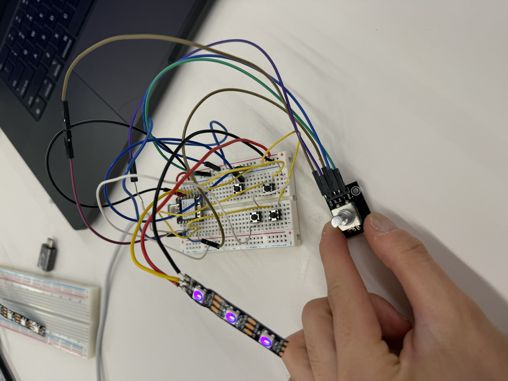
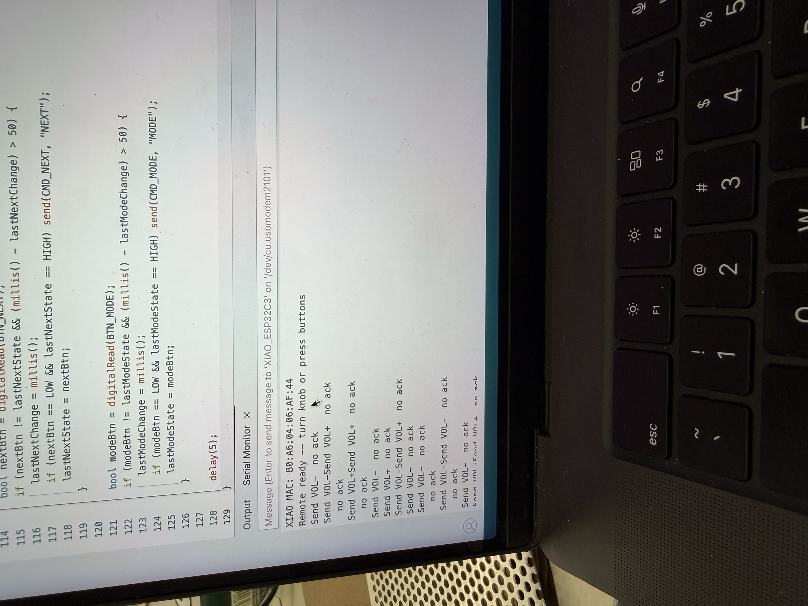
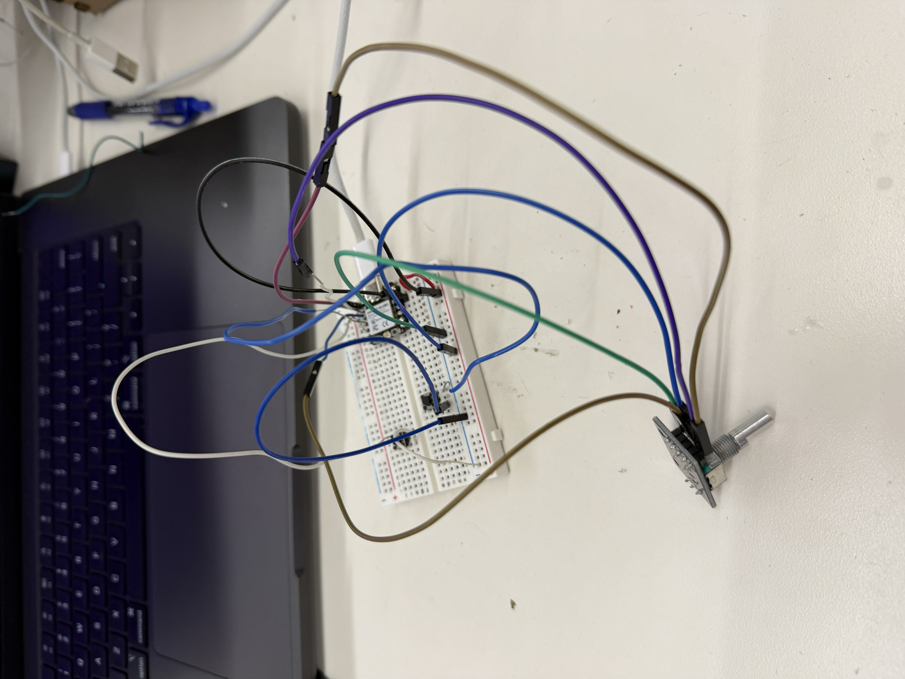
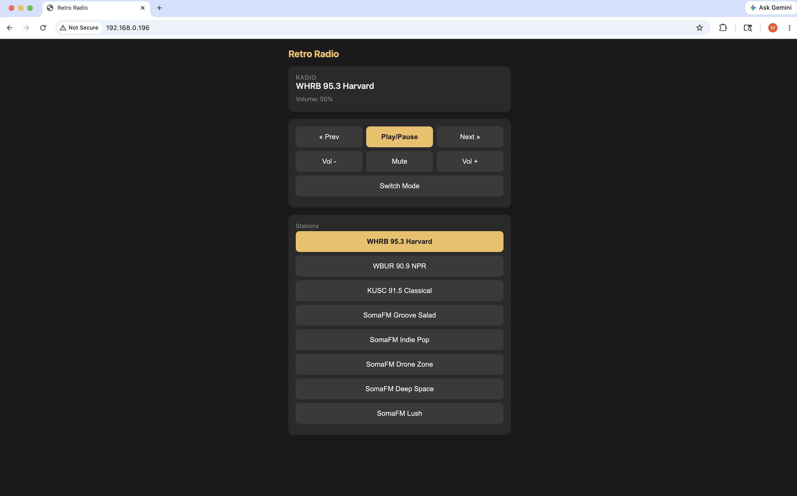
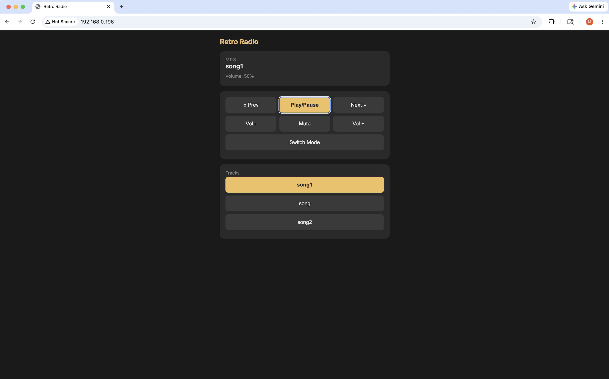
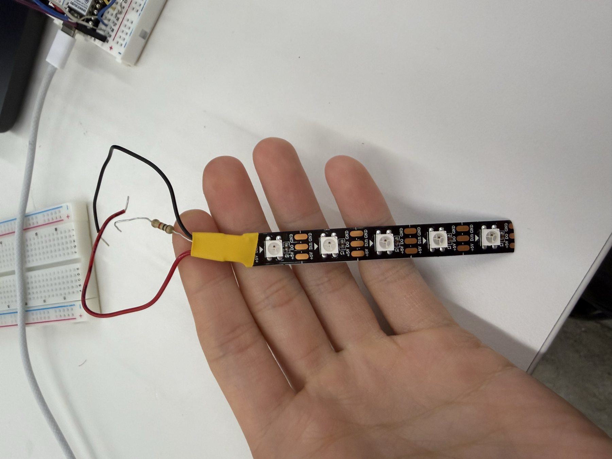
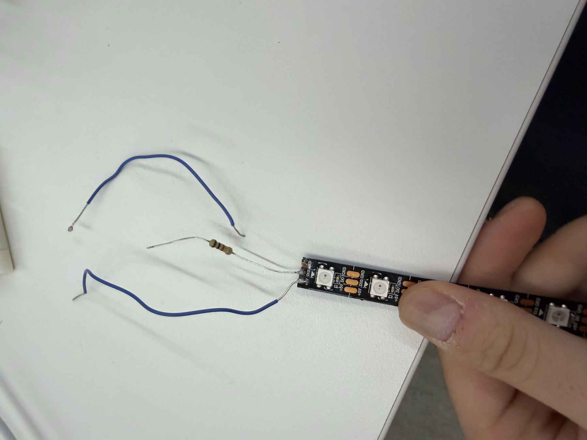
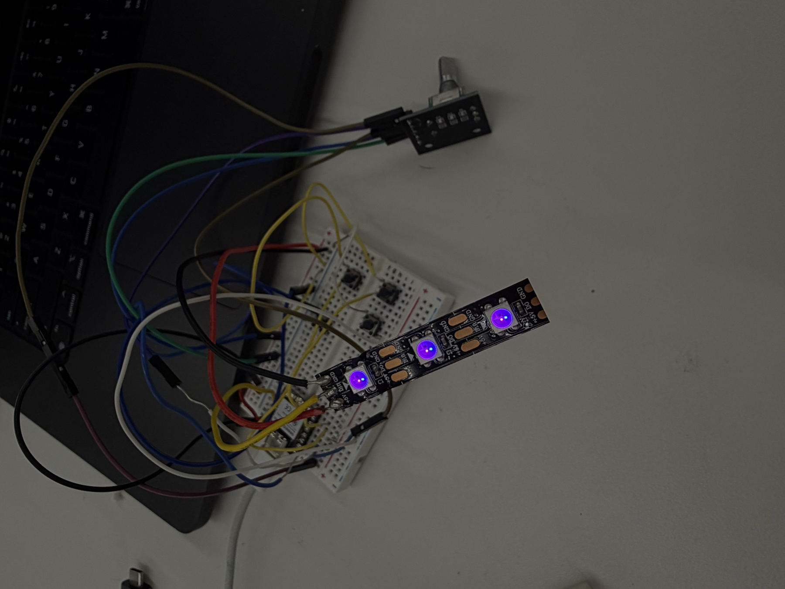
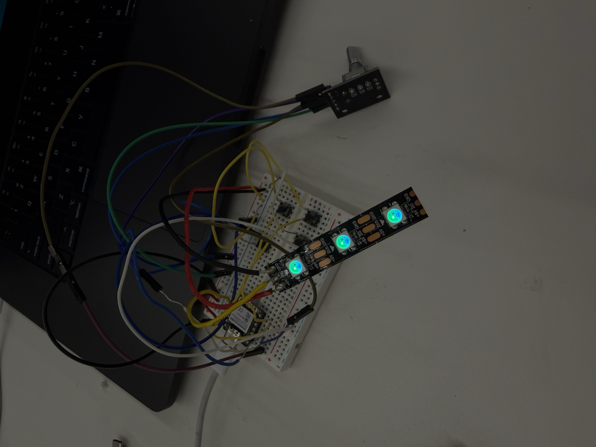

For this week's assignment, I wanted to build a wireless remote control for my radio final project using ESP-NOW. Since I'd already finished an initial version of the radio, a remote felt like a natural next step.
I knew I wanted the remote to handle a few key functions:
To do all of that, I planned to put about four buttons and a rotary encoder for volume on a breadboard alongside a XIAO microcontroller. I chose the XIAO because it is small but still has enough pins for this use case. It is also small enough that I could eventually turn the remote into a portable, handheld device. I also wanted to add an LED that changed color depending on the radio's current mode.

I started by reading the ESP-NOW tutorial on the PS70 website and the Random Nerd Tutorials guide it links to. ESP-NOW lets two ESP devices talk directly to each other, peer-to-peer, without a router. For that to work, each device needs to know the other's MAC address.
To find the MAC addresses on my system, I called the ESP-IDF function esp_read_mac(), following the Espressif API documentation. Once I had both addresses, I hard-coded each device's MAC into the other's sketch.
// In the XIAO sketch, I entered the radio's MAC address:
uint8_t mainRadioMac[] = { 0x34, 0x5F, 0x45, 0x37, 0x17, 0x4C };
// In the radio sketch, I entered the XIAO's MAC address:
uint8_t xiaoMac[] = { 0xB0, 0xA6, 0x04, 0x06, 0xAF, 0x44 };With that, the radio and the remote could talk to each other directly.
One of the biggest challenges I ran into was that, even though ESP-NOW works without a router, both devices still have to be on the same WiFi channel. My radio has several modes, including internet radio, MP3, Bluetooth, and FM. The radio's ESP32 uses a different WiFi channel for each one, so the remote would work in one mode but not another. For instance, it worked in internet radio mode, but pressing the mode button rebooted the radio into MP3 mode on a different channel, where the remote went dead.
The Serial Monitor helped me see the problem clearly. The remote was still emitting ESP-NOW packets, but the radio was no longer acknowledging them.

To solve this, I explored two possible solutions. The first was connecting the XIAO to the same WiFi network as the radio. This forces both devices onto the same channel by default, but it makes the remote depend on a specific WiFi network, like MAKERSPACE, being present. If I took the radio out of the makerspace, the remote would stop working, which was not what I wanted.
The second solution was channel scanning, which is the approach I went with. In this approach, the XIAO sends commands on its current channel. If no acknowledgement comes back within a few milliseconds, it scans channels 1 through 13, trying each until it gets an acknowledgement. Once it finds the radio, it stays on that channel until the next failure.
I ultimately chose channel scanning because it required no changes to the radio at all and was easier for the user. The XIAO automatically finds whatever channel the radio's ESP32 is on.
While debugging, I realized some radio modes simply cannot coexist with WiFi. For FM radio, WiFi has to be turned off completely. The 2.4 GHz energy that WiFi emits interferes with the nearby analog FM signal and the FM module's circuitry, so every WiFi transmission can garble the FM audio. Here's the code I used to fully shut WiFi down.
WiFi.disconnect(true);
WiFi.persistent(false);
WiFi.mode(WIFI_OFF);
btStop();
delay(200);I found out that Bluetooth has a similar problem. The ESP32 has only one physical 2.4 GHz radio transceiver, and since WiFi and classic Bluetooth both use that band, they have to share the hardware by taking turns. I couldn't reliably run both at once, so I had to shut off WiFi when using Bluetooth, which made it impossible to control Bluetooth with a remote. I realized therefore that my remote would only be able to control two WiFi-based modes, namely MP3 and internet radio.
After wiring up the rotary encoder and buttons, much as I had in previous weeks' assignments, I made three additional changes to the system.

My first improvement was making the communication bidirectional. Originally the XIAO only sent commands to the radio. To help the remote understand the status of the radio in real time, I wanted the radio to also send its status back to the XIAO. This way, the remote always knows the radio's true state, even if someone changes something on the radio physically.
Based on my previous code, the XIAO already sends a one-byte remote packet to the radio.
struct RemotePacket { uint8_t cmd; };
#define CMD_PLAY 1
#define CMD_VOLUP 2
#define CMD_VOLDN 3
#define CMD_NEXT 4
#define CMD_MODE 5
#define CMD_PREV 6
#define CMD_MUTE 7To send status back, I defined an identical StatePacket struct in both sketches, holding everything the remote needs to know about the radio's condition. One important design rule came out of this. Since ESP-NOW just copies raw memory, if the radio's struct and the XIAO's struct disagreed on their layout by even a single byte, the XIAO would copy garbage into the wrong fields.
struct StatePacket {
uint8_t mode; // 0=MP3, 1=BT, 2=RADIO, 3=FM
uint8_t volumePct; // 0-100
uint8_t paused; // 0/1
uint8_t muted; // 0/1
char name[40]; // track name or station name
};
StatePacket lastState;
bool haveState = false;To keep the two packet types from ever being confused, I distinguish them by size. The remote packet is 1 byte and the state packet is 44 bytes. Since that is a hard rule, the XIAO's receive callback can simply check the packet length.
void onDataRecv(const uint8_t* mac, const uint8_t* data, int len) {
if (len == sizeof(StatePacket)) {
memcpy(&lastState, data, sizeof(StatePacket));
// ... use it
}
}However, since each radio mode stores its state differently, I needed a function to translate any mode's state into the common state packet format before broadcasting it.
void broadcastState() {
StatePacket pkt;
pkt.mode = (uint8_t)currentMode;
if (currentMode == MODE_FM) {
pkt.volumePct = (fmVolumeQ7 * 100) / 128; // FM volume is a Q7 fixed-point value
pkt.muted = fmMuted ? 1 : 0;
pkt.paused = 0;
} else {
pkt.volumePct = (uint8_t)(vol * 100); // other modes use a 0.0-1.0 float
pkt.muted = muted ? 1 : 0;
pkt.paused = paused ? 1 : 0;
}
// ... name field filled per-mode ...
esp_now_send(xiaoMac, (uint8_t*)&pkt, sizeof(pkt));
lastStateBroadcast = millis();
}With two-way communication in place, the radio became a much more accurate and dynamic device to use.
My second improvement was a web app for controlling the radio, in case I didn't have the physical remote on hand.
My idea was to have my radio ESP boot up an HTTP server. Then, when my laptop, which has to be on the same WiFi network as the radio, opens the radio's IP address in a browser, the page shows the radio's current state and offers control buttons. Tapping a button sends an HTTP request back to the radio, which acts on it exactly as if a physical button had been pressed.
To start, I used the WebServer library on the radio's ESP32 to get an HTTP server up and running.
#include <WebServer.h>
WebServer webServer(80);
bool webServerRunning = false;
void startWebServer() {
if (webServerRunning) return;
webServer.on("/", handleRoot); // serves the HTML page
webServer.on("/state", handleState); // serves current state as JSON
webServer.on("/cmd", handleCmd); // executes a command
webServer.on("/pick", handlePick); // jumps to a station/track
webServer.begin();
webServerRunning = true;
Serial.print("Web server up at http://");
Serial.println(WiFi.localIP());
}In addition, just as the radio reports its state to the XIAO over ESP-NOW, I also needed it to report its state to the web app as a JSON snapshot. I wrote a handleState() function to do this.
void handleState() {
String json = "{";
const char* modeName = (currentMode == MODE_MP3) ? "MP3" : ...;
json += "\"modeName\":\""; json += modeName; json += "\",";
// name, volume, paused, muted ...
if (currentMode == MODE_RADIO) {
json += "\"listLabel\":\"Stations\",";
json += "\"idx\":"; json += currentStation; json += ",";
json += "\"list\":[";
for (int i = 0; i < NUM_STATIONS; i++) {
json += "\""; json += stations[i].name; json += "\"";
if (i < NUM_STATIONS - 1) json += ",";
}
json += "]";
} else if (currentMode == MODE_MP3) {
// same shape, but the track list
}
json += "}";
webServer.send(200, "application/json", json);
}My first attempt at the web app got the basic page loading and the regular control buttons talking to the radio, but it failed when I tried to switch modes from the browser. The radio stayed stuck instead of moving between MP3 and internet radio, which showed me that mode switching needed more careful handling than the simpler play, pause, and volume commands.
After debugging the mode command, the final web app worked properly on my laptop. The browser could show the radio's current state and make all of the main controls available, including play/pause, volume, mute, previous/next, mode switching, and selecting stations or tracks.


This worked very well. Like the ESP-NOW remote, though, the web app depends on WiFi. It goes a step further by needing an actual WiFi network, since the radio has to have an IP address. So it carries the same limitation in that it only works in MP3 and internet radio modes.
My third improvement was adding a NeoPixel LED strip to show which mode the radio is in, either internet radio or MP3. I wanted the remote to do something visible with the status it was receiving from the radio, and it was also a good excuse for me to learn how to use an LED strip, which I'd never done before. The key piece of code that allowed for the NeoPixel color change was updateLedForMode(), which mapped a color onto a music mode and turned on the corresponding pixels.
// Mode colors:
// MP3 = purple (128, 0, 200)
// BT = blue (0, 60, 255)
// RADIO = green (0, 200, 80)
// FM = amber (255, 140, 0)
void updateLedForMode(uint8_t mode) {
uint8_t r = 0, g = 0, b = 0;
switch (mode) {
case 0: r = 128; g = 0; b = 200; break;
case 1: r = 0; g = 60; b = 255; break;
case 2: r = 0; g = 200; b = 80; break;
case 3: r = 255; g = 140; b = 0; break;
default: r = 30; g = 30; b = 30; break;
}
for (int i = 0; i < NUM_PIXELS; i++) pixels.setPixelColor(i, pixels.Color(r, g, b));
pixels.show();
displayedMode = mode;
}Then, to turn on the NeoPixel, I implemented this code, which turned the strip on to a brightness of only 60 out of a max of 255. I didn't want the strip to be too bright so this was a good brightness.
pixels.begin();
pixels.setBrightness(60);
pixels.clear();
pixels.show();The most important thing I learned was that the strip has to be soldered in the right direction, toward the input end, not the output end. I went through several strips from the bin and even soldered one myself the wrong way, so I learned that lesson the hard way. I followed another Random Nerd Tutorial to wire the NeoPixel strip to the XIAO, though the wiring was simple since two of the strip's pins are just power and the third is the data pin.




With all of these changes, I had a working wireless remote for the radio that could change the volume, skip songs, mute, and switch modes, plus an LED that changes color with the radio's mode. Thanks to the two-way communication and channel scanning, the remote worked very smoothly.